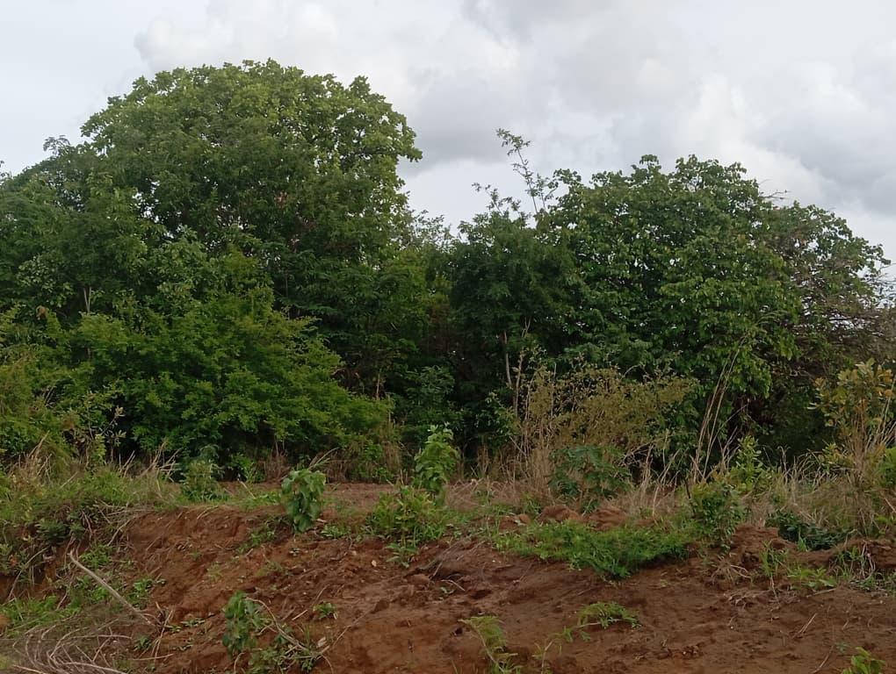

Our Projects & Community Engagement
Partnerships and initiatives that have shaped our community work.
2018–2022
Refugee Education & Scholarships
Privately funded scholarship initiatives supported refugee communities around Ndzaleka Camp, with diaspora well-wishers helping vulnerable learners access education.
2022–2023
Youth Empowerment & COVID-19 Awareness
Collaboration with youth organizations in Dowa covering COVID awareness, youth empowerment, leadership development and responsible natural resource management.
2023–2024
Environmental Conservation & Tree Replenishment
Worked with journalists and local communities in Mchinji to promote tree replenishment, environmental conservation and sustainable natural resource management.
Current
Education & Environmental Partnership Development
Preliminary engagements with communities and schools in high-density urban areas, including Ntandile and Chilimampunga School.
Project Gallery


